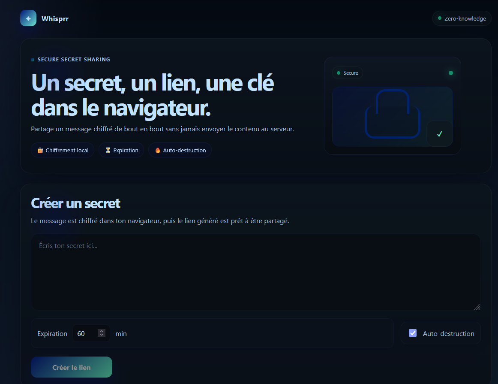

Whisprr

Partage de secrets en zero-knowledge : le serveur ne voit jamais le contenu en clair. Chiffrement fait côté client avec la Web Crypto API avant tout envoi.
voir les détails techniques
Comment ça marche : à la création, le navigateur génère une clé AES-GCM 256 bits, chiffre le secret, puis envoie au serveur uniquement le texte chiffré et l'IV — la clé est ajoutée au fragment (#) du lien, qui n'est jamais transmis au serveur dans une requête HTTP. À l'ouverture, le destinataire récupère le texte chiffré via l'API, lit la clé dans window.location.hash, et déchiffre localement. Le serveur ne stocke que l'identifiant, le texte chiffré, l'IV et les paramètres d'expiration/destruction — jamais la clé ni le message en clair (chiffrement dans crypto.ts, persistance dans store.ts).
Ce que j'ai fait : conception du flow de bout en bout (saisie → chiffrement client → génération du lien → expiration/auto-destruction côté serveur), intégration de la Web Crypto API et du stockage Upstash Redis, déploiement sur Vercel et tests bout en bout.
Décision technique : projet structuré sans dossier src/ (le dossier app/ du App Router reste à la racine) — un choix volontairement simple pour un projet de cette taille plutôt qu'une arborescence plus lourde.
Limites connues : le lien complet (fragment compris) donne accès au secret — à partager uniquement avec le destinataire prévu, comme un mot de passe ; il n'y a pas de vérification d'identité, le lien est un canal de confidentialité, pas d'authentification. Avec l'auto-destruction activée, le serveur supprime le secret dès que la requête de lecture est traitée, avant même la fin du déchiffrement côté client : un lien dont la clé serait invalide peut donc quand même « consommer » le secret.